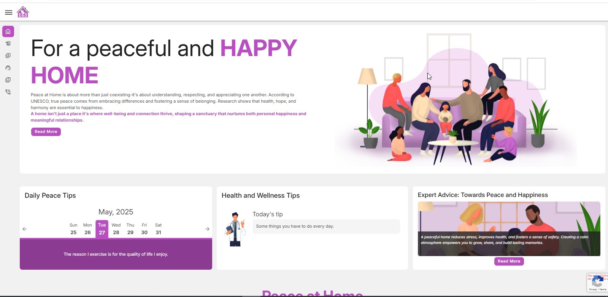
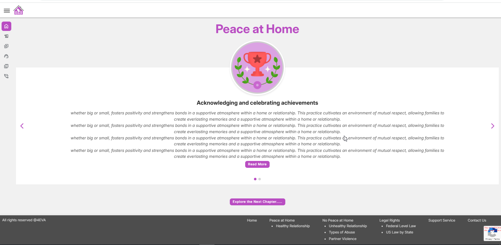
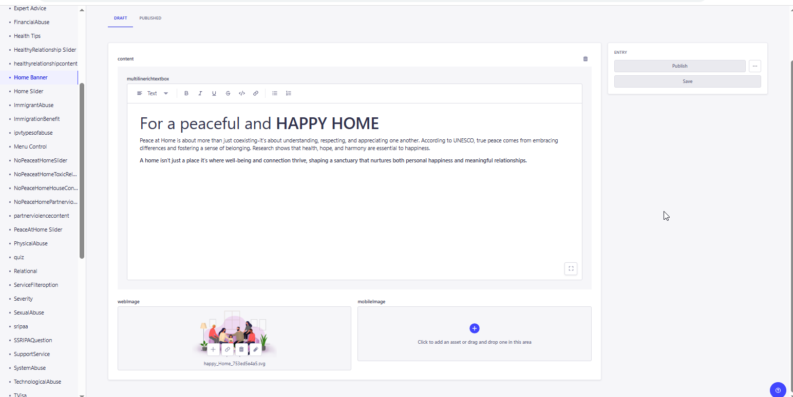
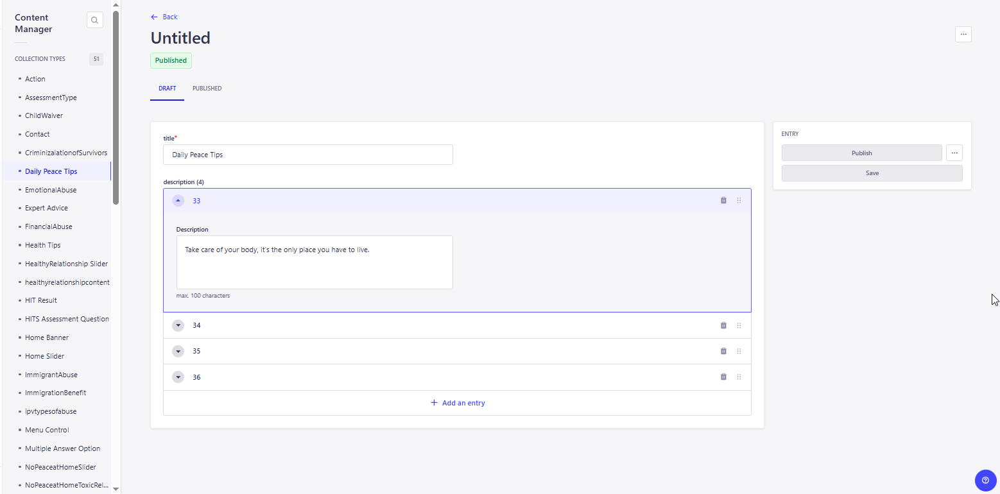
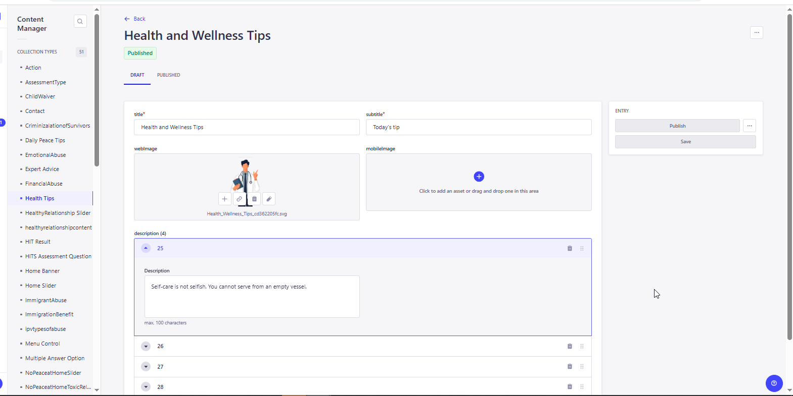
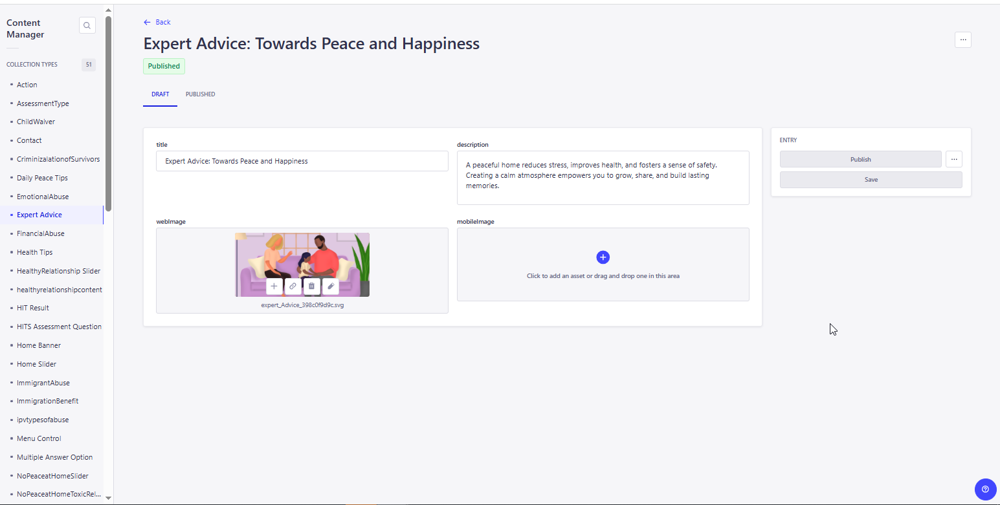
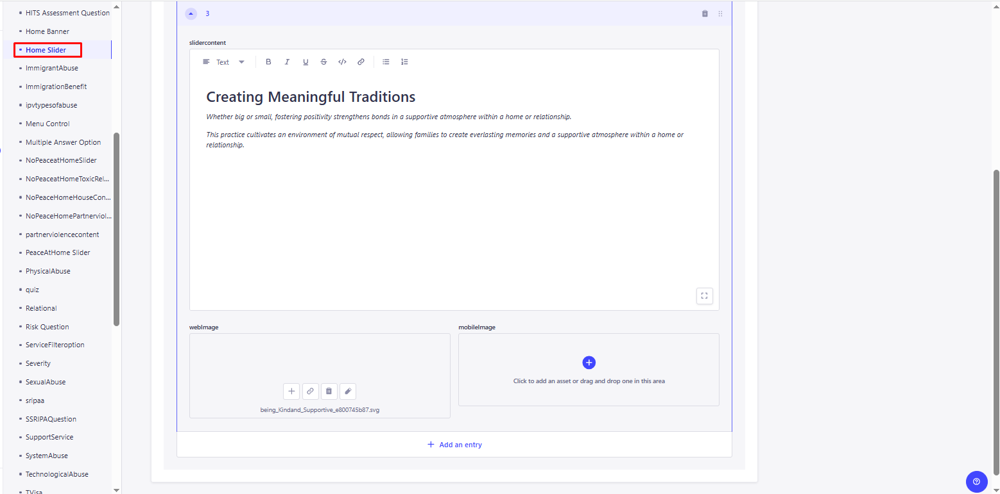

<link rel="stylesheet" href="../css/styles.css">
 
<main>
        <h2>Homepage</h2>
        <p>
        1. This page serves as the NFS-4EVA's home page/landing page, and it includes an overview of the Happy Home families' peaceful and healthier content. <br>
        2. The user enters a valid URL to launch the Education Module and the URL is : 
            <a target="_blank" href=https://happy-grass-02e46c50f.6.azurestaticapps.net/home>HomePage</a> <br>
        3. The homepage shows the content ,Daily Peace Tips, Health and Wellness Tips, Expert Advice: Towards Peace and Happiness<br> 
             <br><br>
        4. And at the bottom of the page there is a Sliders that has a forward and backward arrows and using this user can move between the sliderd.<br>
             <br><br>
         <h4><b><u>Home Banner</u> </b></h4>    
        5. For updating the content in the application , the admin needs to open the CMS site.<br>
        6. For Update the Home Banner content, open the Home Banner menu from the Content Manager mene and the URL is :
           <a target="_blank" href=https://cma-strapi-app-heecd3e6bwczakfu.eastus2-01.azurewebsites.net/admin/content-manager/collection-types/api::home-banner.home-banner/t09dncoarisperqrceus18de>HomeBanner</a><br>
        7. The home banner page will appear and click over the table content, the content page will open in edit format.<br>
            <br>
        8. Update the content if required and Click on Publish to make the changes refelects in the application. <br>
         <h4><b><u>Daily Peace Tips, Health Tips and Expert Advice</u> </b></h4>  
        9. The homepage will show the content for Daily Peace Tips, Health tips and Expert Advice for Towards Peace and Happiness.<br>
           The Tips are updated and showing the new tips on daily basic.<br>
           These tips are stored in the CMS and we can add/edit and update the contents over here.<br>
            <br>
           For Daily Peace Tips : Go to CMS > Control Manager > Select and open 'Daily Peace Tips' > Create new Entry or edit the exisiting one.<br>
            <br>
           For Healthy Tips : Go to CMS > Control Manager > Select and open 'Health Tips' > Create new Entry or edit the exisiting one.<br>
            <br>
           For Expert Advice : Go to CMS > Control Manager > Select and open 'Expert Advice' > Create new Entry or edit the exisiting one.<br>
            <br>
           Update the content if required and Click on Publish to make the changes refelects in the application. <br>
         <h4><b><u>Home Slider</u> </b></h4> 
        10.The home sliders will show short notes about the information that is related to the current topice.<br>
           All these slider contents are stored in the CMS with its images and user can able add/edit and updated the content based on the requirments <br> 
            <br>
           For Home Sliders: Go to CMS > Control Manager > Select and open 'Home Sliders' > Create new Entry or edit the exisiting one.<br>
            <br>
           Update the content if required and Click on Publish to make the changes refelects in the application. <br>
        </p>                 
    </main>